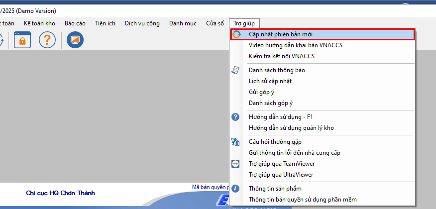
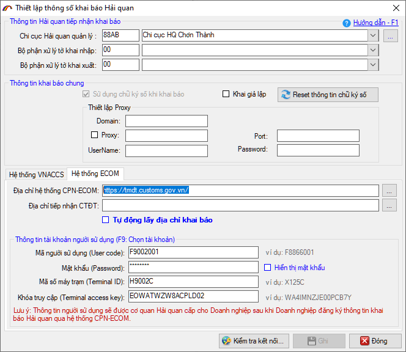
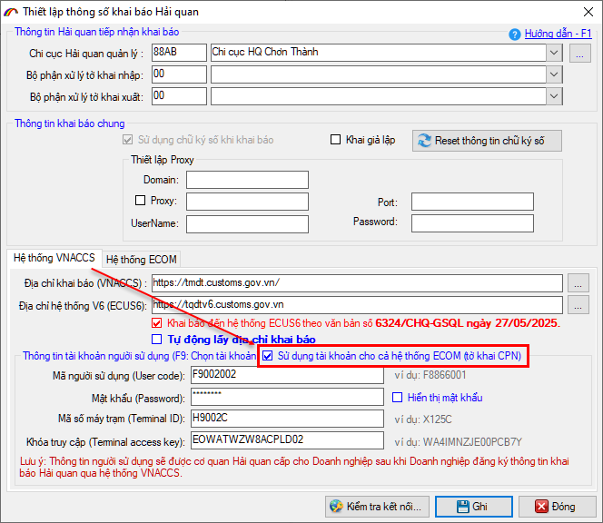
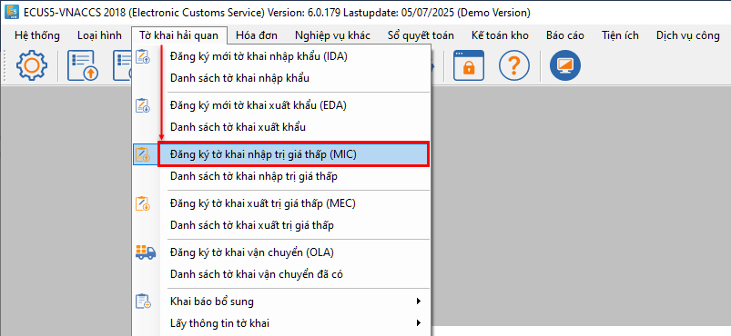
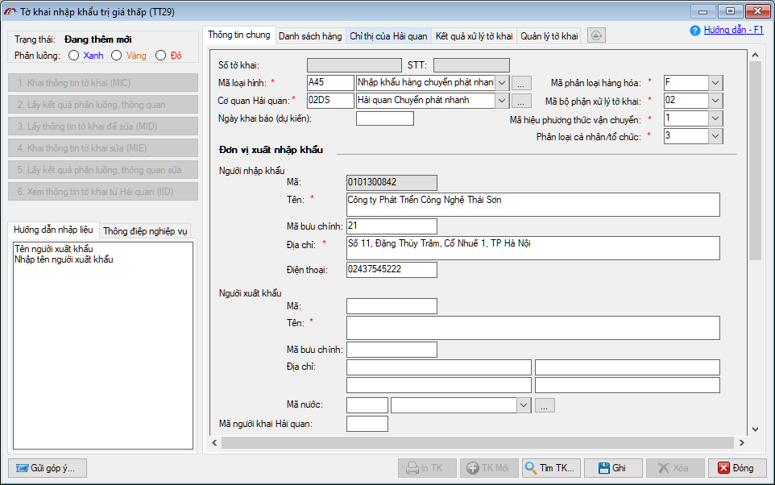
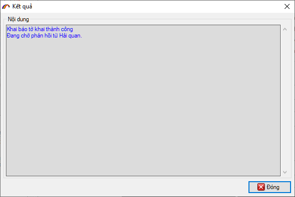
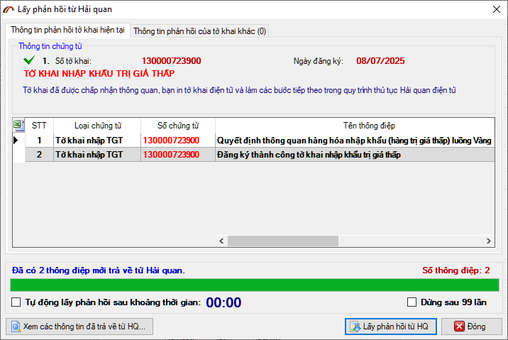
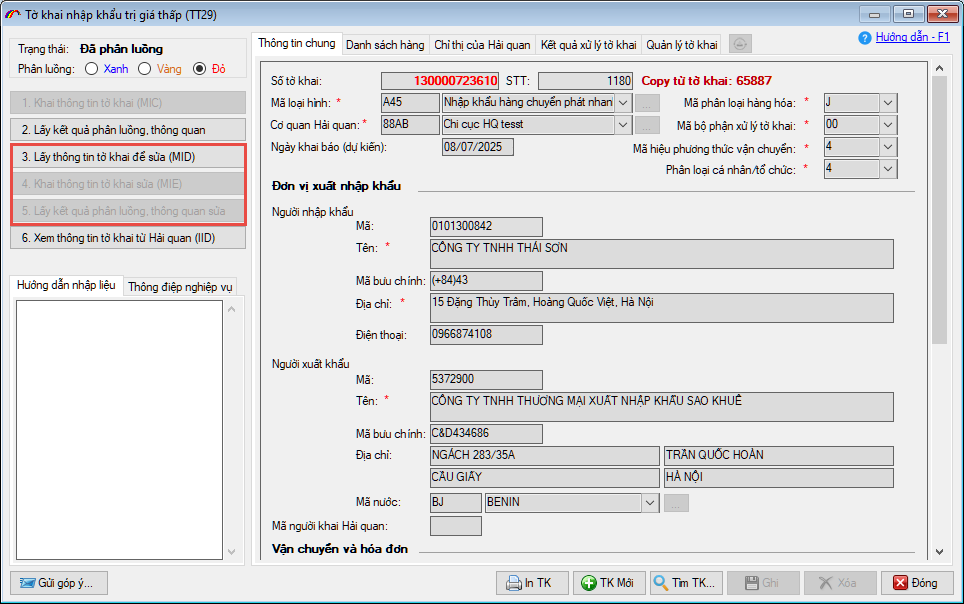
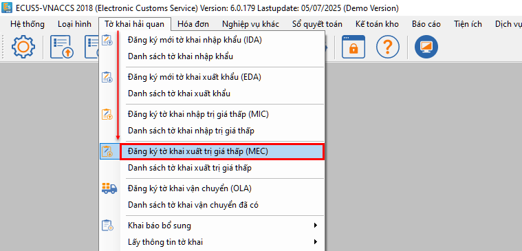
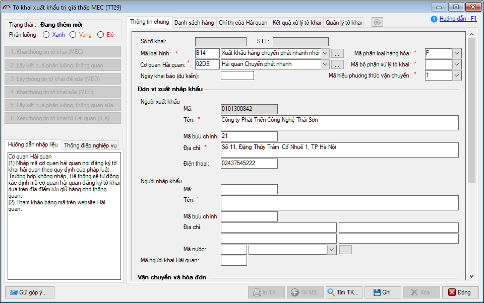

THÔNG BÁO
(V/v thức áp dụng thủ tục khai báo đối với hàng hóa xuất khẩu, nhập khẩu, quá cảnh gửi qua dịch vụ chuyển phát nhanh quốc tế đến hệ thống tiếp nhận hàng thương mại điện tử (ECOM)
Kính gửi quý doanh nghiệp
Thực hiện nội dung Thông tư 29/2025/TT-BTC sửa đổi, bổ sung một số điều của Thông tư 191/2015/TT-BTC quy định thủ tục hải quan đối với hàng hóa xuất khẩu, nhập khẩu, quá cảnh gửi qua dịch vụ chuyển phát nhanh quốc tế đã được sửa đổi, bổ sung tại Thông tư 56/2019/TT-BTC của Bộ trưởng Bộ Tài chính.
Từ ngày 09/07/2025, Cơ quan Hải quan chính thức áp dụng thủ tục khai báo đối với hàng hóa xuất khẩu, nhập khẩu, quá cảnh gửi qua dịch vụ chuyển phát nhanh quốc tế đến hệ thống tiếp nhận hàng thương mại điện tử (ECOM).
Để thực hiện khai báo từ phần mềm ECUS5VNACCS, doanh nghiệp xem phần hướng dẫn chi tiết dưới đây.
1. Thiết lập địa chỉ và tài khoản khai báo
- Doanh nghiệp cần thực hiện nâng cấp phần mềm ECUS5VNACCS lên phiên bản mới nhất tại menu Trợ giúp / Cập nhật phiên bản mới.

- Sau khi cập nhật phiên bản mới nhất, bạn truy cập vào menu Hệ thống / Thiết lập thông số khai báo VNACCS.

- Tại đây, bạn chọn tab Hệ thống ECOM và thiết lập địa chỉ khai báo hệ thống CPN-ECOM: https://tmdt.customs.gov.vn/
- Đối với tài khoản khai báo, hệ thống hải quan sẽ tự động đồng bộ và sử dụng tài khoản VNACCS hiện có của doanh nghiệp. Do đó, bạn chỉ cần nhập các thông số của tài khoản, bao gồm: User code, Mật khẩu, Terminal ID và Terminal Access Key.
- Bạn cũng có thể đánh dấu tích chọn: Sử dụng tài khoản cho cả hệ thống ECOM (tờ khai CPN) bên tab Hệ thống VNACCS để phần mềm tự động cập nhật thông tin tài khoản sang Hệ thống ECOM.

2. Khai báo tờ khai hải quan
- Tờ khai để khai báo hàng hóa xuất khẩu, nhập khẩu, quá cảnh gửi qua dịch vụ chuyển phát nhanh quốc tế trên phần mềm ECUS5VNACCS có mã nghiệp vụ MIC/MEC:
- - Tờ khai nhập khẩu trị giá thấp TT29 (MIC)
- - Tờ khai xuất khẩu trị giá thấp TT29 (MEC)
- a) Khai báo tờ khai nhập khẩu trị giá thấp TT29 (MIC)
- Để khai báo tờ khai nhập khẩu trị giá thấp theo TT29, bạn truy cập menu Tờ khai hải quan / Đăng ký mới tờ khai nhập khẩu trị giá thấp:

- Giao diện tờ khai hiện ra như sau:

- Một số chỉ tiêu cần lưu ý khi nhập dữ liệu:
- Bạn tiến hành nhập dữ liệu với lưu ý chỉ tiêu có dấu sao màu đỏ là bắt buộc phải nhập, ngoài ra cần lưu ý một số chỉ tiêu sau:
- - Mã loại hình: Mã loại hình tờ khai nhập khẩu trị giá thấp là A45
- - Mã phân loại hàng hóa: Chọn F nếu là hàng hóa chuyển phát nhanh, bưu chính; chọn J nếu là loại hàng hóa khác theo quy định của Chính phủ.
- - Chi tiết hàng hóa (danh sách hàng), các chỉ tiêu thông tin bắt buộc phải nhập rất ít, như: Tên mô tả hàng hóa, xuất xứ, số lượng, đơn vị tính.
- - Mã miễn / không chịu thuế nhập khẩu: bạn chọn một trong hai hình thức miễn / không chịu thuế theo trị giá tối thiều (MTG) hoặc theo tiền thuế tối thiểu (MTT).
- - Mã biểu thuế VAT: bạn chọn mã biểu thuế VAT áp dụng, nếu không có thuế thì chọn mã là V.
- Các bước khai báo tờ khai nhập khẩu trị giá thấp.
- Sau khi nhập dữ liệu tờ khai, doanh nghiệp thực hiện khai báo bằng cách nhấn nút nghiệp vụ: Khai thông tin tờ khai MIC, hệ thống tiếp nhận thành công sẽ trả về thông báo như sau:

- Lưu ý: Đây chỉ mới là thông báo tiếp nhận ban đầu, bạn cần lấy phản hồi kết quả để biết hệ thống cấp số tờ khai hay từ chối. Nếu tờ khai được chấp nhận, khi lấy phản hồi sẽ trả về bản xác nhận khai báo kèm số tờ khai, luồng tờ khai, chấp nhận thông quan….

- Trường hợp khai sửa đối với tờ khai chưa thông quan (luồng Vàng Đỏ).
- Khi tờ khai luồng Vàng, Đỏ chưa thông quan bạn sử dụng các nút nghiệp vụ 3, 4, 5 để thực hiện:

- b) Khai báo tờ khai xuất khẩu trị giá thấp TT29 (MEC)
- Để khai báo tờ khai xuất khẩu trị giá thấp theo TT29, bạn truy cập menu Tờ khai hải quan / Đăng ký mới tờ khai xuất khẩu trị giá thấp:

- Giao diện tờ khai hiện ra như sau:

- Bạn tiến hành nhập dữ liệu cho tờ khai với lưu ý các chỉ tiêu có dấu sao màu đỏ là bắt buộc phải nhập. Ngoài ra bạn cần lưu ý các chỉ tiêu:
- - Mã loại hình: Mã loại hình tờ khai xuất khẩu trị giá thấp được quy định là B14
- - Mã phân loại hàng hóa: Chọn F nếu là hàng hóa chuyển phát nhanh, bưu chính; chọn J nếu là loại hàng hóa khác theo quy định của Chính phủ.
- Về quá trình khai báo, bạn cũng thực hiện như đối với tờ khai nhập khẩu trị giá thấp đã hướng dẫn ở trên.
Bản quyền © thuộc về Công ty TNHH Phát triển công nghệ Thái Sơn